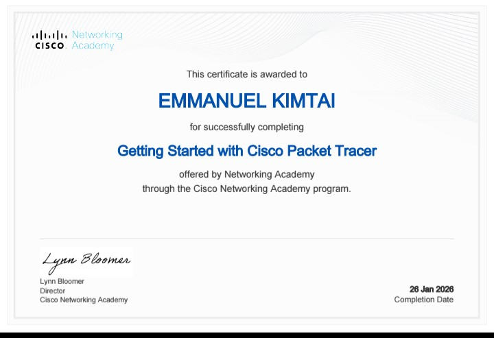
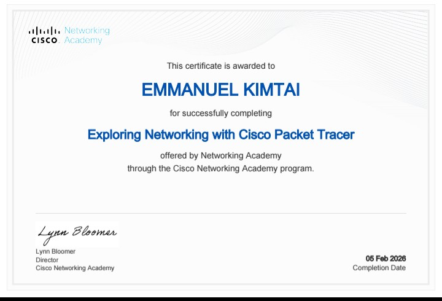
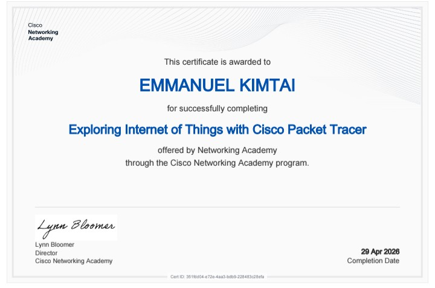
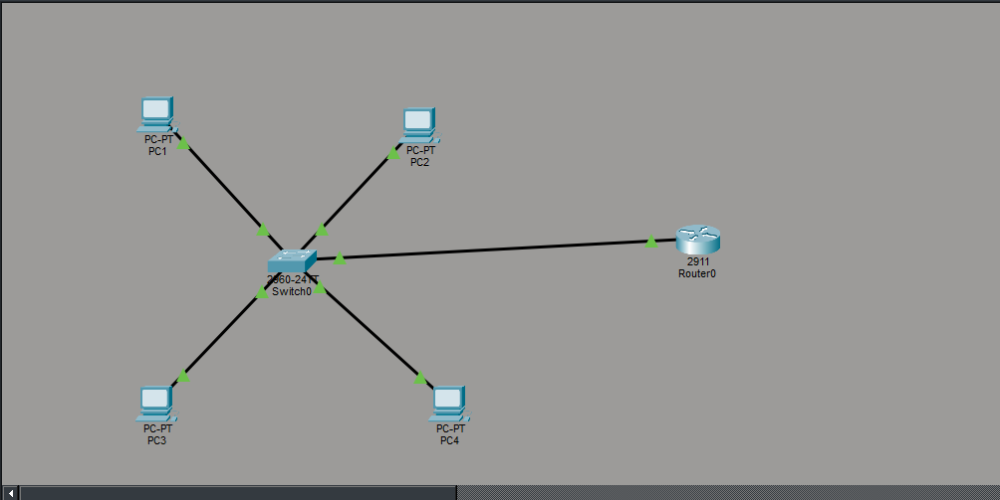
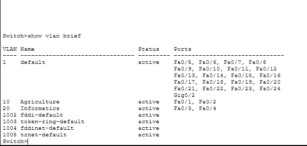
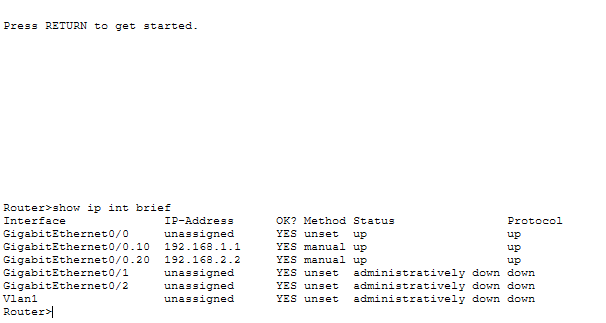
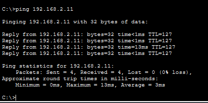

Web Development
HTML5, CSS3, Responsive Design
I build responsive websites and understand how they travel across networks — from HTML/CSS in the browser to VLANs and Inter-VLAN routing on Cisco devices.

I am Emmanuel Kimtai, a BSc. ICT student at JOOUST (Jaramogi Oginga Odinga University of Science and Technology). I build clean, responsive front-ends and configure the networks that carry them.
Web: HTML5, CSS3 (Flexbox & Grid), responsive design, basic JavaScript.
Networking: VLAN creation & trunking, Inter-VLAN routing (Router-on-a-Stick), SVI, basic Cisco device configuration and troubleshooting.
Currently interning as a Web Development Intern at CodTech InfoTech Solutions Pvt. Ltd., and certified by Cisco Networking Academy in Packet Tracer, Networking, and IoT (2026).
HTML5, CSS3, Responsive Design
Creation, Access & Trunk Ports
Router-on-a-Stick, SVI
IP Addressing, Device Config
Form Validation, DOM
Version Control
Cisco Networking Academy credentials earned through the Networking Academy program.

Cisco Networking Academy · 26 Jan 2026
Introduction to the Packet Tracer simulation environment — building simple topologies, cabling devices, and running basic connectivity tests.

Cisco Networking Academy · 05 Feb 2026
Hands-on networking fundamentals — connecting switches and routers, assigning IP addresses, and verifying end-to-end connectivity.

Cisco Networking Academy · 29 Apr 2026
Simulating IoT environments — connecting smart devices and sensors, configuring home gateways, and enabling remote monitoring.
Cisco Packet Tracer (.pkt) labs I've built and verified.
Requires Cisco Packet Tracer to open —
free from Cisco Networking Academy.
A small LAN with 4 PCs, one Cisco 2960 switch, and one Cisco 2911 router. Two VLANs (10 · Agriculture and 20 · Informatics) are trunked to the router, where sub-interfaces route traffic between them. Verified end-to-end with ping — 4/4 replies, 0% loss.


show vlan brief confirms
VLAN 10 (Agriculture) on Fa0/1–2 and VLAN 20 (Informatics) on Fa0/3–4.

show ip int brief shows
Gig0/0.10 (192.168.1.1) and Gig0/0.20 (192.168.2.2) both up — one physical
interface serving two VLANs.
